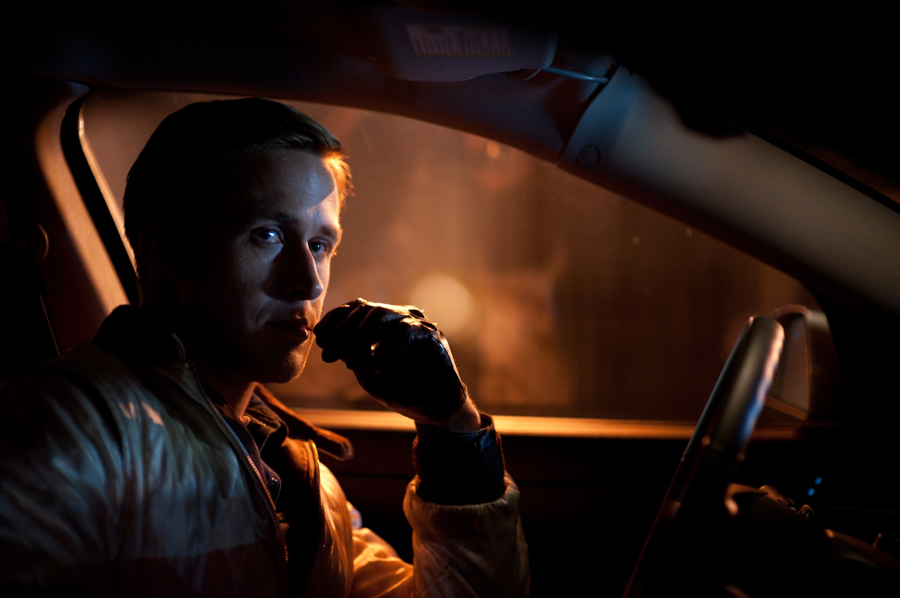

Великолепный водитель – при свете дня он выполняет каскадерские трюки на съёмочных площадках Голливуда, а по ночам ведет рискованную игру. Но один опасный контракт – и за его жизнь назначена награда. Теперь, чтобы остаться в живых и спасти свою очаровательную соседку, он должен делать то, что умеет лучше всего – виртуозно уходить от погони.
Безымянный Водитель (Райан Гослинг) днём работает автомехаником и подрабатывает каскадёром, а по ночам занимается перевозками грабителей с мест преступлений. Его навыки вождения и аккуратность приходятся к месту, когда он помогает двум преступникам скрыться от полиции и довозит их до переполненного фанатами паркинга в «Стэйплс-центр», где как раз закончился баскетбольный матч команды Лос-Анджелес Клипперс. Успешно замаскировавшись под болельщика, в толпе он покидает стадион.
Водитель работает анонимно, никогда не помогая одним и тем же людям дважды. Он только перевозчик и не берёт в руки оружие. Условия сотрудничества единственные: на ограбление выделяется всего пять минут, после чего он уезжает.
Интересный факт: вечный спор о выживании главного героя до сих пор существует, из-за открытой концовки,но режиссёр подтвердил,что Водитель выжил.